História da Porsche
A paixão Porsche
Uma tradição de criar carros esportivos únicos, nasceu no peito das pessoas há muito tempo.
Hoje, conhecido por todos os lados, são poucas as pessoas que não sabem do que se trata o nome da marca quando o ouvem ou o leem. Mas, o início dessa história de amor e tecnologia data de 8 de junho de 1948, quando a inventividade e trabalho árduo do professor Ferdinand Porsche originaram o primeiro protótipo da fabricante de veículos.
Ferdinand Porsche

Nessa trajetória, a Porsche acumulou diversas vitórias e recordes nas pistas, no mercado automotivo e nos corações dos amantes de automóveis. Iremos explorar a linha do tempo desta gigante do setor automotivo, que acelera o coração de tantos indivíduos mundo afora.
Quais são as origens da Porsche?
A história da marca começa na cidade austríaca de Gmünd, município escolhido por Ferdinand e seus parentes para refugiar-se durante a Segunda Guerra Mundial e onde foi criado o primeiro veículo, um roadster com carroceria número 356. Em 1950, após o fim do período conflituoso, a família voltou para a sua terra natal em Stuttgart-Zuffenhausen. A nova, ou antiga morada, serviu como base para o início da produção em série do modelo original da Porsche.
Gmünd

Terra Natal
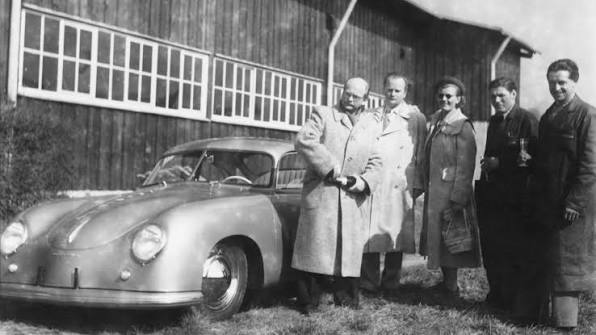
No ano seguinte, o primeiro triunfo da marca na famosa 24 Horas de Le Mans, com um 356 devidamente preparado, chamou a atenção do mundo automobilístico. Já em 1953, surgiria um dos primeiros marcos da fabricante em termos de inovações para as pistas: o 550 Spyder, roadster com chassi tubular de alumínio e motor central.
roadster-356
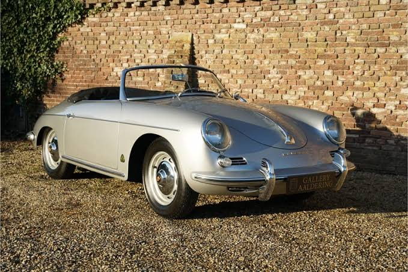
Le Mans 1951

550 Spyder

Esse sucesso e destaque no segmento das corridas incentivou a fabricante a investir na Fórmula 1 e cada vez mais adentrar o universo das pistas. Isso resultou em diversas vitórias nas décadas seguintes, tanto com o modelo 804 quanto com a linha 900.
Porsche 804
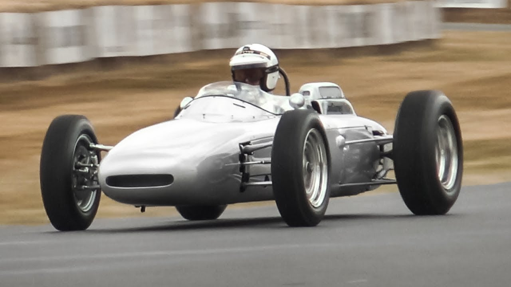
Como a Porsche evoluiu até a gigante automobilística que é hoje?
Após o período inicial, a paixão Porsche começou a bater mais forte nos corações de pessoas ao redor do globo, que a partir das conquistas puderam conhecer um pouco sobre os veículos inovadores da fabricante. Esse sentimento, assim como a criatividade dentro do negócio, apenas cresceu ao longo do tempo.
O ano de 1970 viu a marca apresentar o modelo 914, pequeno cupê de dois lugares criado para oferecer esportividade, mas com preço acessível, produzido em conjunto com outra gigante do setor, a Volkswagen. Mas os êxitos não pararam, pois em 1974, no Salão de Paris, foi introduzido o 911 Turbo e, em 1976, a primeira versão com motor dianteiro e configuração transeixo, que tornou-se um sucesso ao vender cerca de 150 mil unidades.
Porsche 914
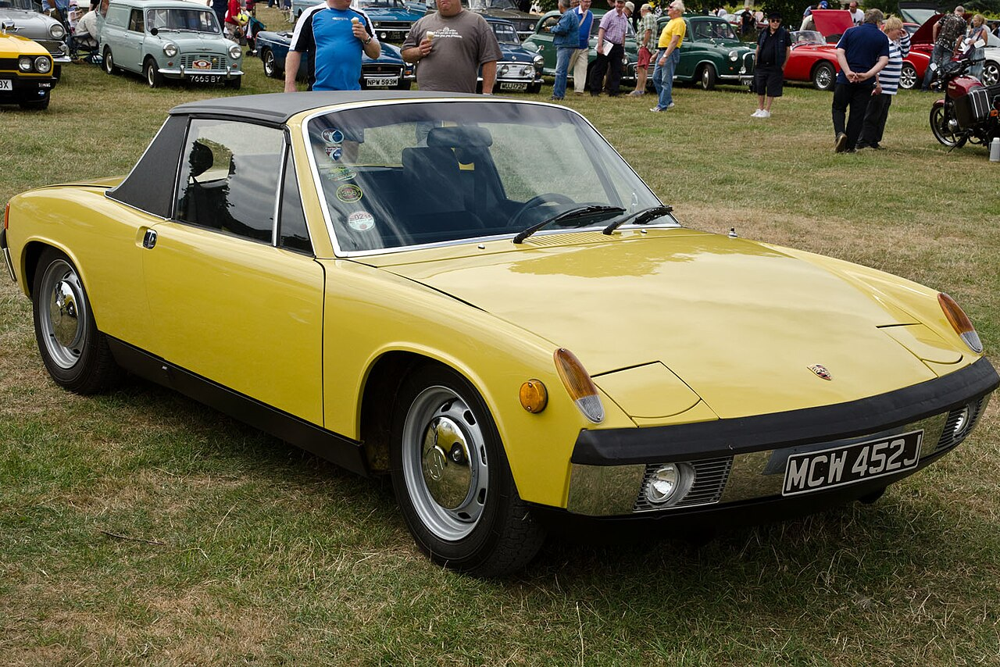
Porsche 911 1974

Porsche 911 1976

Em paralelo a tudo isso, a Porsche continuava em evidência nos circuitos de corrida, colecionando recordes por onde passava. Na edição de 1982 da 24 Horas de Le Mans, os cinco primeiros colocados dirigiam modelos da fabricante. Além disso, na renomada corrida de Daytona, garantiu as três posições principais e os títulos do Mundial de Endurance e do campeonato americano IMSA.
Le Mans - 1982

No ano seguinte, construíram o famoso motor TAG Turbo, que equipava os carros da McLaren e futuramente garantiria mais três premiações mundiais e 25 vitórias na Fórmula 1. Nessa época, as inscrições “TAG Turbo made by Porsche” na carroceria viraram febre e sinónimos de qualidade entre os pilotos e público automobilístico.
Motor TAG Turbo

Quais foram os avanços mais recentes da Porsche?
Assim como os automóveis que produzia, a marca nunca mais parou de acelerar. Essa afirmação provou-se ainda mais verdadeira nos anos 2000, com a criação do Cayenne, primeiro SUV da Porsche, que tornou-se um dos mais desejados pelos fãs no mundo todo.
Porsche Cayenne - 2000
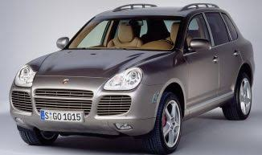
Em 2009, presenciamos o nascimento de outro sucesso, o Panamera, levando uma experiência premium para os admiradores e consumidores mais assíduos da fabricante, onde a paixão Porsche brilhava mais.
Porsche Panamera - 2009
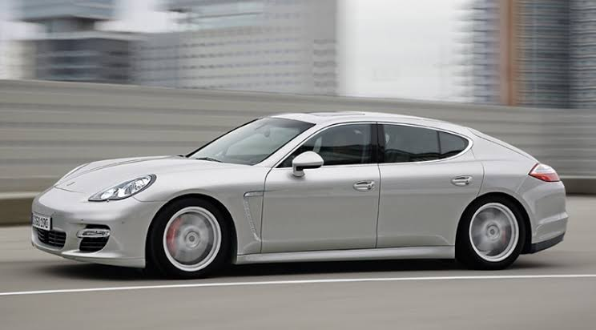
No Salão de Frankfurt de 2013, o híbrido 918 Spyder chamou atenção de todos, já que dias antes havia estabelecido o recorde do circuito de Nürburgring-Nordschleife, completando uma volta de 20,6 km em apenas 6 minutos e 57 segundos. Assim como o seu sucessor, o 919 Hybrid, que permitiu o retorno da produtora de veículos a categoria principal do 24 Horas de Le Mans.
Porsche 918 Spyder

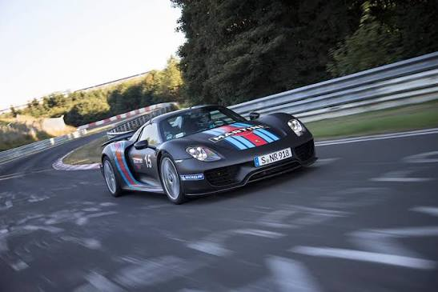
Porsche 919 Spyder
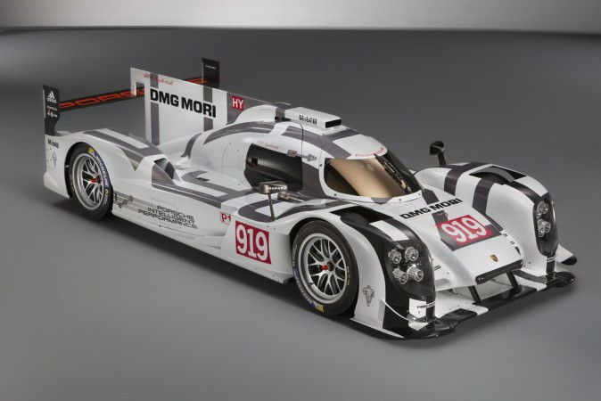
Recentemente, vimos o surgimento da linha 100% elétrica, a Taycan. Visando o futuro, a marca estabeleceu a meta de desenvolver carros tão incríveis como os feitos a combustão, mas de uma forma completamente sustentável e inovadora.
Porsche Taycan
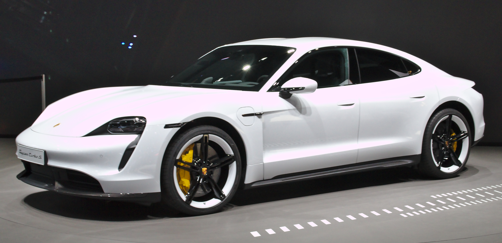
Confira a linha do tempo completa da Porsche
- 1948: nasce a Porsche com a fabricação do 356.
- 1950: a família de Ferdinand Porsche retorna a sua cidade Stuttgart-Zuffenhausen e inicia a produção em série do primeiro modelo.
- 1951: o 356 estreia e destaca-se no 24 Horas de Le Mans.
- 1953: surge o 550 Spyder.
- Início da década de 60: Porsche investe em veículos focados na Fórmula 1.
- 1962: o modelo 804 vence o GP da França, em Rouen, conduzido pelo piloto Dan Gourney.
- 1963: apresentação do novo 901 no Salão de Frankfurt, sucessor de 356, que tempos depois teve o seu nome mudado por razões de patente.
- 1964: revela-se o 904 Carrera GTS, primeiro modelo da marca a ser criado com uma carroceria de plástico reforçado com fibra de vidro, e que oficialmente originou a linha 900.
- 1970: começa a produção do 914.
- 1974: é apresentado o 911 Turbo no Salão de Paris.
- 1976: criada a primeira versão de um modelo com motor dianteiro e configuração transeixo.
- 1982: os carros da Porsche adquirem vários recordes e títulos, incluindo as cinco primeiras colocações na classificação geral da 24 Horas de Le Mans e a principal premiação do Mundial de Endurance e do campeonato americano IMSA.
- 1983: estreia o motor TAG Turbo nos automóveis da McLaren.
- 2002: lançamento do Cayenne, SUV da Porsche.
- 2009: nasce o Panamera, que utiliza a tecnologia das pistas para garantir uma experiência premium para os consumidores e amantes da marca.
- 2013: ganha destaque no Salão de Frankfurt no modelo híbrido 918 Spyder, recordista no circuito de Nürburgring-Nordschleife.
- 2014: retorno à categoria principal na 24 Horas de Le Mans com o 919 Hybrid.
- 2019: revelado o primeiro carro 100% elétrico da Porsche, o Taycan, assim como a linha de mesmo nome.
- 2024: Em 2024, a Porsche não apenas anunciou o Taycan Turbo GT como o mais veloz veículo da marca até então, mas também revelou o aguardado Macan 100% elétrico.
1948: nasce a Porsche com a fabricação do 356.
1950: a família de Ferdinand Porsche retorna a sua cidade Stuttgart-Zuffenhausen e inicia a produção em série do primeiro modelo.
1951: o 356 estreia e destaca-se no 24 Horas de Le Mans.
1953: surge o 550 Spyder.
Início da década de 60: Porsche investe em veículos focados na Fórmula 1.
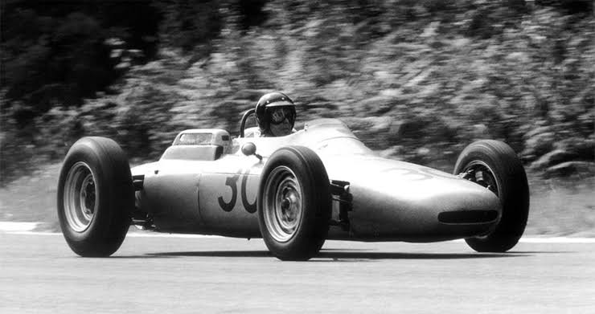
1962: o modelo 804 vence o GP da França, em Rouen, conduzido pelo piloto Dan Gourney.
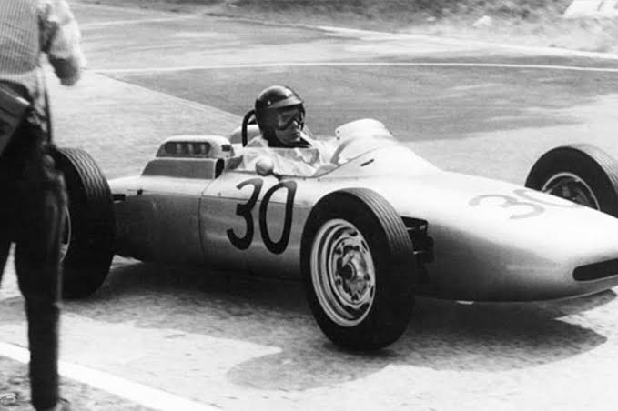
1963: apresentação do novo 901 no Salão de Frankfurt, sucessor de 356, que tempos depois teve o seu nome mudado por razões de patente.
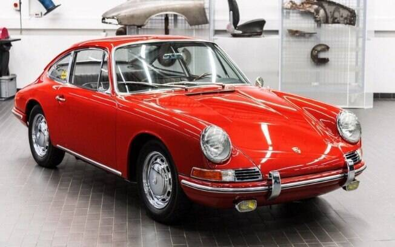
1964: revela-se o 904 Carrera GTS, primeiro modelo da marca a ser criado com uma carroceria de plástico reforçado com fibra de vidro, e que oficialmente originou a linha 900.
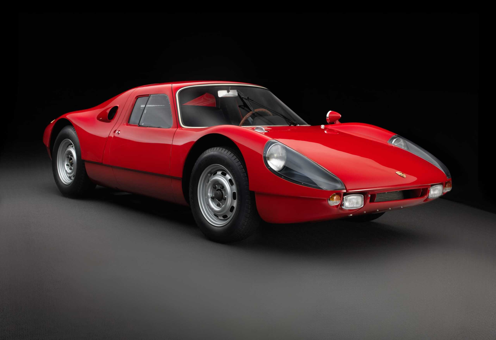
1970: começa a produção do 914.
1974: é apresentado o 911 Turbo no Salão de Paris.
1976: criada a primeira versão de um modelo com motor dianteiro e configuração transeixo.
1982: os carros da Porsche adquirem vários recordes e títulos, incluindo as cinco primeiras colocações na classificação geral da 24 Horas de Le Mans e a principal premiação do Mundial de Endurance e do campeonato americano IMSA.
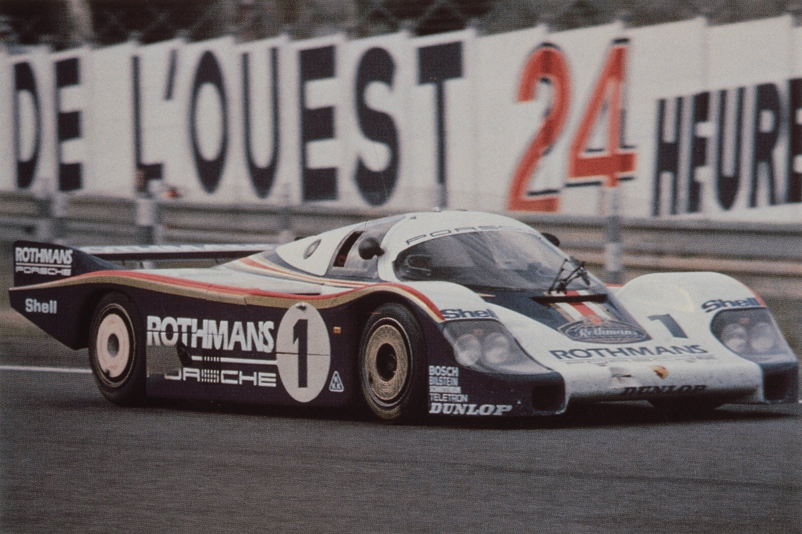
1983: estreia o motor TAG Turbo nos automóveis da McLaren.
2002: lançamento do Cayenne, SUV da Porsche.
2009: nasce o Panamera, que utiliza a tecnologia das pistas para garantir uma experiência premium para os consumidores e amantes da marca.
2013: ganha destaque no Salão de Frankfurt no modelo híbrido 918 Spyder, recordista no circuito de Nürburgring-Nordschleife.
2014: retorno à categoria principal na 24 Horas de Le Mans com o 919 Hybrid.
2019: revelado o primeiro carro 100% elétrico da Porsche, o Taycan, assim como a linha de mesmo nome.
2024: Em 2024, a Porsche não apenas anunciou o Taycan Turbo GT como o mais veloz veículo da marca até então, mas também revelou o aguardado Macan 100% elétrico.
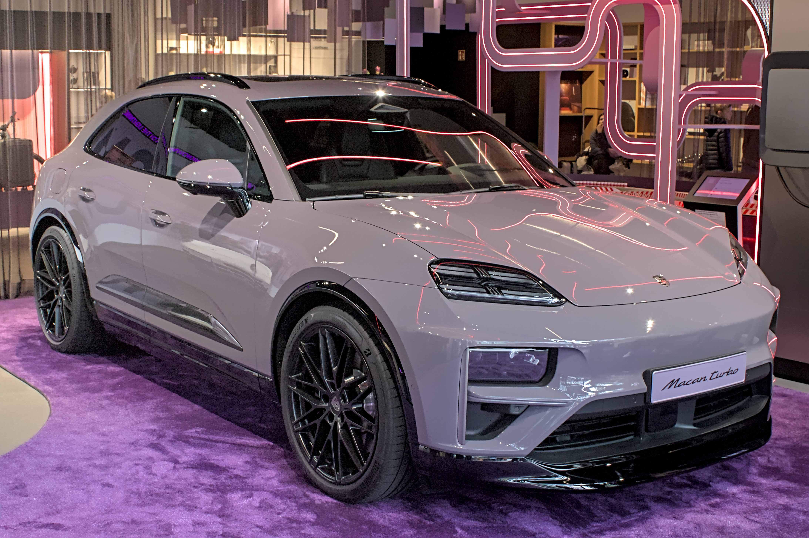
Fonte: História da Porsche